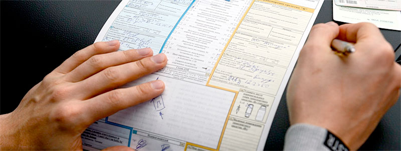

Європротокол
Європротокол — це зручний та швидкий спосіб оформлення дорожньо-транспортної пригоди (ДТП) без виклику поліції. Спеціальний бланк дозволяє водіям-учасникам аварії швидко задокументувати обставини події, щоб не створювати заторів та уникнути додаткових проблем. У цій статті ви дізнаєтеся, як правильно використовувати Європротокол, його переваги та умови застосування.
auto ins, автоинс, аутоинс, ауто инс, autoins, автоинс, авто инс, автоінс, авто інс, ауто інс,
Що таке Європротокол?
Європротокол — це офіційний документ, який заповнюють учасники ДТП на місці події. Його використання дозволяє:
-
Швидко оформити обставини аварії.
-
Уникнути виклику поліції.
-
Забезпечити компенсацію збитків через страхову компанію.

Де можна отримати бланк Європротоколу?
-
Паперовий бланк видається при оформленні ОСЦПВ.
-
У разі втрати або використання бланка, новий можна отримати безкоштовно у страховій компанії.
-
Є також електронний формат, доступний у системі «Електронний Європротокол» на сайті МТСБУ.
Переваги використання Європротоколу
-
Економія часу:
Заповнення бланка займає мінімум часу, що дозволяє швидше звільнити дорогу.
-
Відсутність адміністративних штрафів:
При використанні Європротоколу водії звільняються від адміністративної відповідальності за ДТП.
-
Можливість оформлення без поліції:
Поліція не потрібна, якщо всі умови для використання Європротоколу виконані.
Коли можна скористатися Європротоколом?
Для використання Європротоколу необхідно виконання наступних умов:
-
У ДТП немає травмованих або загиблих осіб.
-
Усі водії мають діючі поліси ОСЦПВ.
-
Водії погоджуються з обставинами ДТП і готові їх зафіксувати.
-
Учасники ДТП не перебувають у стані алкогольного або наркотичного сп'яніння.
-
Максимальна сума збитків не перевищує 80 000 грн.
*На 2024 рік. З 2025 року ліміт по європротоколу має бути скасований.
Якщо хоча б одна з цих умов не виконується, виклик поліції є обов’язковим.
Як правильно заповнити Європротокол?
1. Паперовий Європротокол:
-
Заповніть усі поля бланка, включаючи схему ДТП.
-
Вкажіть дані обох водіїв (страховка, номер авто, особисті дані).
-
Підпишіть документ обома сторонами.
-
Залиште собі копію для передачі в страхову компанію..
2. Електронний Європротокол:
З 2017 року в Україні діє система «Електронний Європротокол», яка дозволяє оформити ДТП онлайн.
Умови для заповнення електронного Європротоколу:
-
Усі учасники повинні мати діючі страховки.
-
Необхідний доступ до інтернету і смартфон із камерою для фотофіксації.
-
Дані про авто та страхову компанію мають бути коректно внесені в базу МТСБУ.
-
Заповніть форму із зазначенням даних водіїв, авто та обставин аварії.
-
Завантажте фото пошкоджень.
-
Надішліть документ для автоматичної обробки страховою компанією.
Що робити після заповнення Європротоколу?
Протягом трьох робочих днів після ДТП учасники повинні звернутися до своїх страхових компаній із заповненим бланком. Якщо Європротокол був оформлений в електронному вигляді, страховик отримає його автоматично.
Чому Європротокол важливий для водіїв?
Швидкість вирішення: Ви можете уникнути затримок на дорозі та швидко врегулювати ситуацію.
Прозорість процесу: Завдяки Європротоколу страхові компанії мають чіткі дані про обставини аварії.